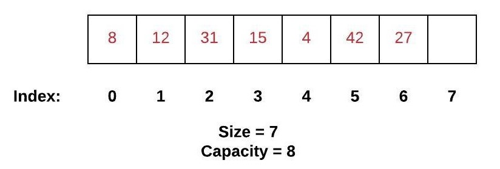
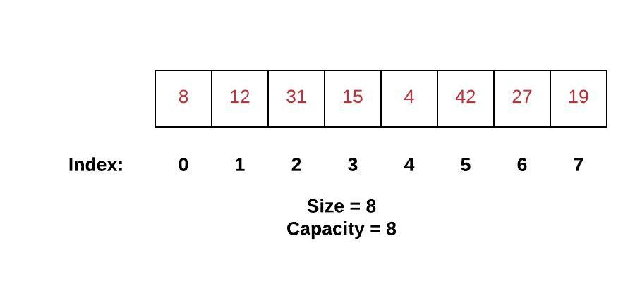
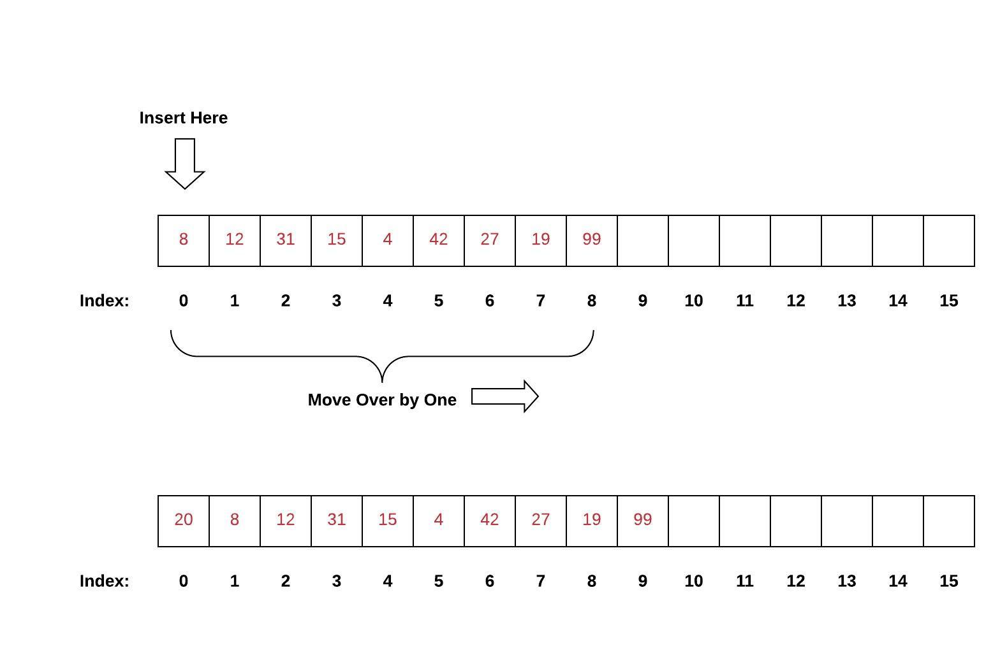
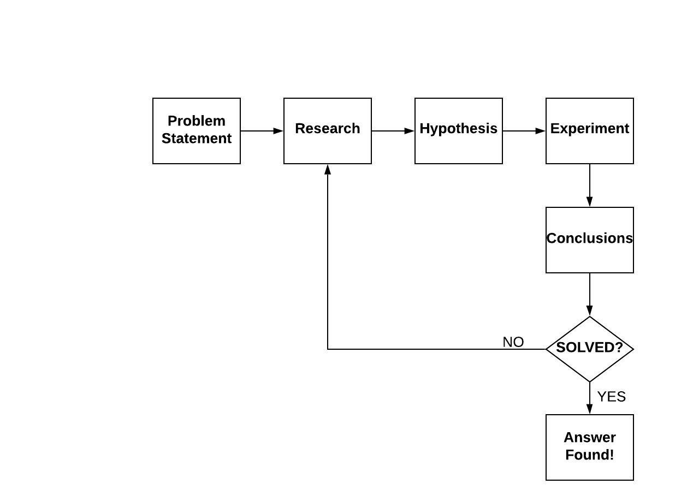

01 Prepare: Reading
Table of Contents
Dynamic Arrays
Fixed Arrays
A fixed array is a collection of data put in memory with the following properties:
The fixed array cannot grow or shrink after it is created.
Each item in the fixed array is the same size
Each item in the fixed array is contiguous (i.e. right next to each other) in memory
It is very easy for the programming language to access any position in the array. We use the term index when referring to a position in the array. The index starts at 0. In the example array below, we will assume that index 0 begins at memory location 100. We will also assume that the size of each element in the array is 4 bytes. Using this information, we can determine the memory location for each index. Generically, we can say that memory(index) = starting_address + (index * item_size)
Dynamic Arrays
The difference between a dynamic array and a fixed array is that the dynamic array can grow (and also shrink). This means that we can always add another item to a dynamic array. One of the common operations performed on a dynamic array is to append a new item to the end of the list. Consider the dynamic array below.
In the dynamic array, the size of the array is 7 and the capacity is 8. If we append another number to the array, we can use the formula described earlier to get the memory location of the next available index. We will then store the new number into the memory location just calculated.
In this updated array, both the size and the capacity are now both 8. If we want to append another number, we cannot just add it to the end. A dynamic array is really just a fixed size array (in this case a fixed array of size of 8) that we will discard in favor of building a bigger fixed array. If we tried to add another one, then we would be overwriting memory that likely belongs to another variable. This dangerous condition is called buffer overflow.
To properly grow the array, we have to complete the following steps:
Create a new array twice as big as the original array. Usually a dynamic array starts with
capacity0 and then increases in the following pattern: 0, 1, 2, 4, 8, 16, 32, 64, 128, etc.Copy all the values from the original smaller array into the new larger array.
Delete the original smaller array.
Add the new item to the larger array.
Inserting in the Array
If we wanted to insert an item somewhere besides the end of the dynamic array, we would need to be careful to maintain the order of the items in the array. In the array below, if we insert a value at the beginning of the array, all other items will need to move to the next index (i.e. move to the right).
Deleting from the Array
If we wanted to delete an item from the array, we would need to move all items after the item removed to the previous index (i.e. move to the left). As a special case, if we wanted to remove the last item in the array, we would not need to move any other items. The typical effect of removing the last item is to just decrease the size variable by 1 while leaving the capacity the same. This means that the data is not really "deleted." If we append a new item, then the previously "deleted" item will be overwritten.
Python Lists
In Python, a dynamic array is created by using a list. The most common way to create a list is to use square brackets (e.g. my_list = [1, 2, 3]) The following table shows the most common operations in a dynamic array and the equivalent Python code:
| Common Dynamic Array Operation | Description | Python Code |
|---|---|---|
| lookup(index) | Gets the value at the specific index. | value = my_list[index] |
| append(value) | Adds "value" to the next available index. | my_list.append(value) |
| insert(index, value) | Adds "value" to the specified index and moves subsequent items to the next index. | my_list.append(0, value) # Insert at beginning |
| remove(index) | Removes the item at the specified index and moves subsequent items to the previous index. | del my_list[index] |
| size() | Return the size of the dynamic array. | length = len(my_list) |
| capacity() | Return the capacity of the dynamic array. | There is no capability in Python to see the capacity. |
| empty() | Returns true if the length of the dynamic array is zero. | if len(my_list) == 0: |
Looping Through Lists and the Range Function
To access, display, or do something with every item in a list, the for loop is used. The following code will display all values in a list one at a time:
for item in my_list:
print(item)
This type of for loop is called an iterator because it will visit all items in the collection without the programmer needing to think about the index. We can change the for loop so that it loops through all the index values for the list instead.
for index in range(len(my_list)):
print(my_list[index])
The range(n) function is used to create something "like" a list that goes from 0 to n-1. This is very vonvenient since the indices of a list of size n will go from 0 to n-1. While this for loop is more complicated, there will be times when solving a problem that you want to know the index value. When this is needed, the range function should be used. There are three ways the range function can be used:
range(a)- Select numbers from 0 to a-1.range(a,b)- Select numbers from a to b-1.range(a,b,c)- Select numbers from a to b-1 stepping by c. For example,range(1,8,2)will produce 1, 3, 5, 7. Notice that the step size may prevent us from finishing at the b-1 value.
List Comprehensions
If we need to create a list in Python, a list comprehension provides some shorthand notation for writing them quickly. A list comprehension can generically be written using an expression, collection, and a condition as follows: my_list = [expression for item in collection if condition]
The three parts of the list comprehensions can be described as follows:
expression- This is required and represents what will be put in the list.for item in collection- This is required and represents how many items should be in the list (or considered in the list).if condition- This is optional and represents which items should be included (or excluded).
Here are some examples of list comprehensions:
# Create a list of numbers 0 to 99
my_list = [x for x in range(100)]
# Create a list of square numbers from 0^2 to 99^2
my_list = [x*x for x in range(100)]
# Create a list of even numbers less than 100
my_list = [x for x in range(100) if x % 2 == 0]
# Do the same thing by using a different version of range
my_list = [x for x in range(0, 100, 2)]
# Create a list of words that have an 'E'
my_words = ['CAKE', 'DOG', 'APPLE']
words_with_e = [word for word in my_words if 'E' in word]
# Find all leap years between 1900 and 2000
# Multiples of 4 are leap years
# Except, Multiples of 100 are not leap years
# Except, Multiples of 400 are leap years
leap_years = [year for year in range(1900, 2001) if (year % 400 == 0) or
(year % 100 != 0 and year % 4 == 0)]
Problem Solving Strategies
Scientific Method
It can be daunting to try to solve a problem (especially if you are constrained by time in an interview). While it can be tempting to either dive into code or dive into the internet to find help, we want to develop engineering discipline in our work. When we learned about science, we were introduced to the scientific method.
Four Step Process
When we go directly to writing code we are short-circuiting the process. When we start out the process by researching online but use the answers without experimenting with those ideas, we are also short-circuiting the process. For the purposes of solving problems with software, consider the following four steps that align well with the scientific method:
Understand the Problem - Restate the problem in your own words. Ask questions to clarify the problem.
Plan and Design the Solution - Brainstorm ideas and write them down. Try to solve the problem manually on paper. Consider if a data structure (e.g. the dynamic array) could be used to solve the problem. Write down a design (e.g. flow charts, block diagrams, pseudo-code, step-by-step process, etc).
Implement the Solution - Using your design, implement the solution in a programming language.
Evaluate the Solution - Test your solution on several example inputs. Identify which scenarios are working and which ones are not. If it's working, ask yourself if it could be done better (e.g. faster, with less code, with fewer variables, etc). If the solution still needs work, return back to the first step again.
Key Terms
capacity - The number of items that can fit in the fixed array or the number of items that can currently fit in the dynamic array. The capacity of a dynamic array can be increased. This should not be confused with the size of the array.
collection - Data that can be put in a data structure including a dynamic array.
condition - In programming this is a boolean expression that results in True or False. A condition is usually used with an
if.while, or list comprehension in Python.dynamic array - An array that can grow. A dynamic array is a fixed array that is replaced with a new fixed array if more space is needed.
expression - In programming this is a statement that evaluates to a result. Common expressions include mathematical operators (e.g. +, -, *, /) and variables.
index - In an array, the index represents the location of data. The first index in the array is 0. The index also refers to offset in memory from the starting address.
list - In Python, a dynamic array is called a list.
size - The number of items that are currently in a fixed or dynamic array. If the array is empty, then the size is 0. The size can not exceed the capacity.